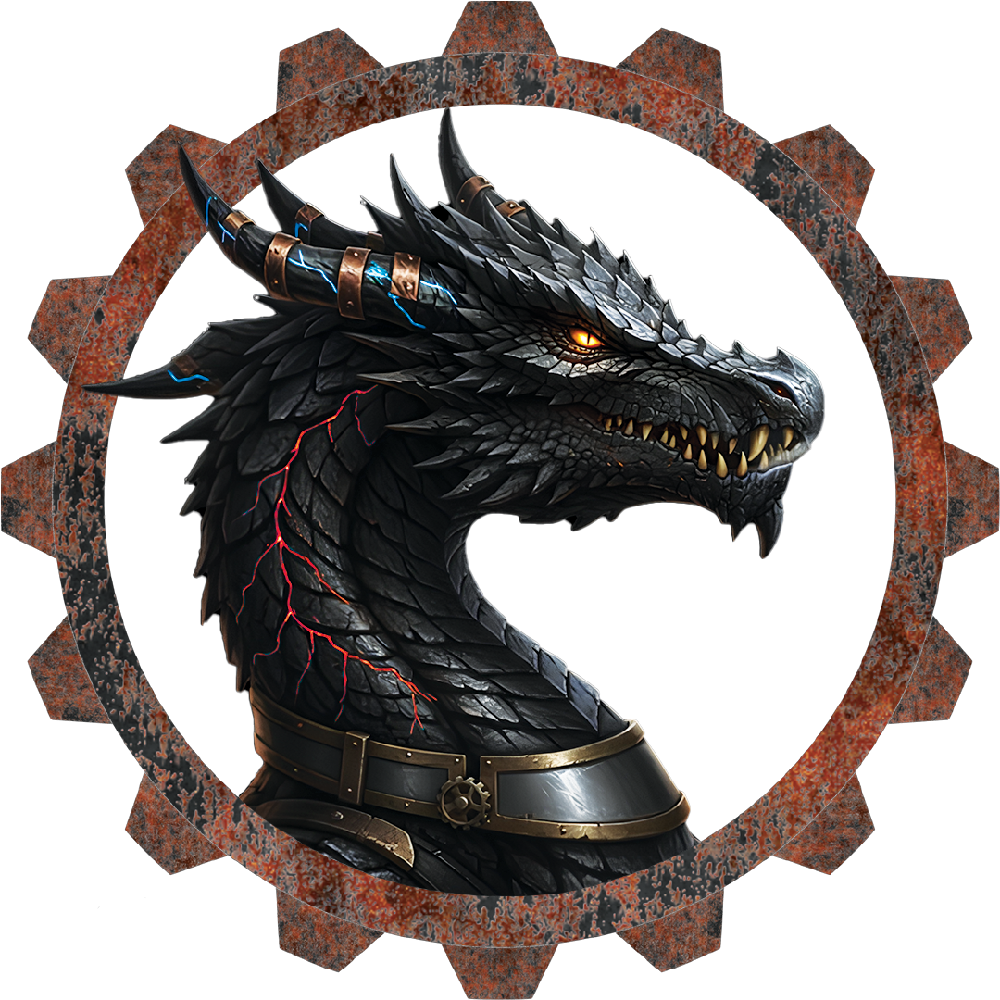

/maintenance
Ensemble de commandes du plugin Maintenance qui permet de gérer le mode maintenance afin de restreindre l'accès au serveur uniquement aux personnes autorisées sur la whitelist dédiée.

Commande qui sert à activer/désactiver le mode AFK. Le mode AFK permet de signaler aux autres joueurs que vous êtes inactif. Celà inclut également des protections pour éviter de vous faire tuer ou de subir d'autres événements qui peut vous nuir.
Commande qui ouvre le menu des enchères. Ici vous pourrez y vendre ou trouver des enchères d'items, ils peuvent être inéressants (ou pas) selon le prix. Ils sont souvent différents d'un item que l'on peut acheter dans le shop (voir /shop) car ils ont souvent des enchantements par exemple ou bien sont rares/non disponibles dans le shop.
Commande qui permet d'ouvrir le menu de votre sac à dos (backpack), ça peut remplacer la touche que vous avez défini en jeu afin d'ouvrir votre sac.
Commande qui vous permet de voir combien d'argent vous avez sur votre compte afin de pouvoir dépenser dans le shop par exemple.
Commande qui permet de voir le top des joueurs qui ont le plus d'argent sur le server ainsi que le montant actuel des joueurs dans le top.
Commande qui permet de modifier votre mot de passe pour vous connecter lorsque vous rejoignez le serveur.
Commande qui permet de réclamer/claim un chunk. Lorsque un chunk est réclamé, celui-ci est protégé de toute destruction, les personnes de votre équipe/team ont par défaut les autorisations afin de pourvoir intéragir avec le chunk.
Commande qui permet de supprimer un home (point de spawn) de votre compte.
???????? Commande qui link ou donne le lien du serveur Discord lié au serveur.
Commande qui permet de lier un email à votre compte sur le serveur afin de pouvoir réinitaliser le mot de passe en cas de perte.
Commande qui permet de montrer les commandes disponibles et leur description en cas de besoin.
Commande qui permet de vous téléporter à un point de spawn (notamment votre maison par exemple).
Commande qui permet de vous téléporter directement au lobby devant les leaderboards.
Commande qui permet de se téléporter au lobby (monde principal).
Commande qui permet de vous connecter sur le serveur. Exemple: /login monsupermotdepasse
Commande qui permet de vous déconnecter de votre compte sur le serveur. Nécessitera de refaire /login si vous voulez pouvoir jouer (même sans se déconnecter du serveur).
Commande qui permet de voir vos messsages/mails sur le serveur. Les messages ou les mails peuvent par exemple être un jour vous a acheté (une pioche) et vous avez obtenu (500$).
Commande qui permet d'envoyer un message privé à un joueur sur le serveur.
Commande qui permet de payer/donner de l'argent à un joueur sur le serveur.
Commande qui permet d'activer/désactiver le mode PvP. Le PvP est le fait de pouvoir s'attaquer entre joueurs. ATTENTION : Un minuteur/cooldown pour éviter les abus est mis en place et vous ne pouvez le désactiver si vous êtes considéré en combat.
Commande qui permet de voir la recette pour fabriquer le bloc que vous tenez actuellement dans la main.
Commande qui permet de vous enregistrer/inscrire sur le serveur. Il faut mettre 2 fois le mot de passe après le nom de la commande afin de le confirmer. Exemple: /register monsupermotdepasse monsupermotdepasse
Commande qui permet de se téléporter dans le monde ressources/minage.
Commande qui permet de se téléporter quelque part aléatoirement dans le monde où vous êtes actuellement.
Commande qui affiche les règles du serveur.
Commande qui permet de définir le point de spawn de la commande /home.
Commande qui permet d'ouvrir le menu shop afin d'y acheter des items ou des claims supplémentaires.
Commande qui permet de voir les skills que vous avez acquis.
Commande qui permet de se téléporter au spawn du monde dans le quel vous êtes actuellement.
Commande qui permet de voir toutes ses statistiques sur le serveur enregistrées par le plugin statz.
Commande qui permet de se suicider comme le nom l'indique. Peut être utile si vous êtes bloqués dans un bloc par exemple. ATTENTION : Cela va normalement créer une tombe avec votre stuff dedans, pensez à aller le chercher si vous ne voulez pas le perdre.
Commande qui permet de se téléporter dans le monde survie.
Commande qui permet d'envoyer une demande de votre téléportation vers un joueur (Vous serez téléportés au joueur questionné).
Commande qui permet d'accepter la demande de téléportation d'un joueur.
Commande qui permet d'envoyer une demande de téléportation d'un joueur vers vous. (Le joueur questionné sera téléporté à vous).
Commande qui permet de refuser une demande de téléportation d'un joueur.
Commande qui permet d'ouvrir le menu du mod Simple Voice Chat.
Commande qui permet de se téléporter vers un point de téléportation public (adressables uniquement par des modérateurs).
Commande qui permet de bannir définitivement un joueur sur le serveur.
Commande qui permet de vérifier si un joueur est banni ou non sur le serveur.
Commande qui permet de nettoyer/enlever tous les items de l'inventaire d'un joueur.
Ensemble de commandes du plugin clearlag qui permet de réduire le lag/latence sur le serveur.
Commande qui permet de whitelist une commande sur le serveur. Le fait de whitelister une commande dans un groupe permet non seulement à celui-ci de la voir apparaître dans le tab-complete/auto completion mais aussi de pouvoir l'exécuter.
Commande qui permet d'ouvrir le coffre d'ender d'un joueur.
Commande qui permet d'appliquer un effet à un joueur.
Commande qui permet d'éteindre un joueur en feu sur le serveur.
Commande qui permet de nourrir un joueur sur le serveur.
Commande qui permet d'activer le mode fly/voler pour un joueur sur le serveur.
Commande qui permet de définir le mode de jeu (créatif/survie/aventure/spectateur) d'un joueur sur le serveur.
Commande qui permet de donner un item à un joueur sur le serveur.
Raccourci de commande pour définir le mode de jeu CREATIF d'un joueur sur le serveur.
Raccourci de commande pour définir le mode de jeu SURVIE d'un joueur sur le serveur.
Raccourci de commande pour définir le mode de jeu SPECTATEUR d'un joueur sur le serveur.
Commande qui permet d'activer le mode god/dieu pour un joueur sur le serveur.
Commande qui permet de heal/regénérer un joueur sur le serveur.
Commande qui permet de voir et manipuler l'inventaire d'un joueur sur le serveur.
Commande qui permet de mettre en prison un joueur sur le serveur.
Commande qui permet de kick/déconnecter/expulser un joueur du serveur.
Commande qui permet de tuer instantanément un joueur sur le serveur.
Ensemble de commandes du plugin LuckPerms qui permet de gérer les autorisations et autres d'un joueur dans le serveur.
Ensemble de commandes du plugin Maintenance qui permet de gérer le mode maintenance afin de restreindre l'accès au serveur uniquement aux personnes autorisées sur la whitelist dédiée.
Commande qui permet de mute/mettre en muet/sourdine définitivement un joueur sur le serveur.
Commande qui permet de téléporter un joueur d'un monde à l'autre sur le serveur.
Commande qui permet de voir le statut PvP d'un joueur sur le serveur.
Commande qui permet de ???????
Commande qui permet de ???????
Commande qui permet de suivre en spectateur un joueur sur le serveur. ???????
Commande qui permet de ???????
Commande qui permet de faire apparaître une entité sur le serveur.
Commande qui permet de téléporter un joueur sur le serveur.
Commande qui permet de bannir temporairement un joueur sur le serveur.
Commande qui permet de mute/mettre en muet/sourdine temporairement un joueur sur le serveur.
Commande qui permet de définir le temps/l'heure du monde dans le quel vous vous trouvez sur le serveur.
Commande qui permet de débannir un joueur sur le serveur.
Commande qui permet de sortir de prison un joueur sur le serveur.
Commande qui permet de unmute/enlever le muet/sourdine d'un joueur sur le serveur.
Commande qui permet de se vanish/mettre en mode vanish sur le serveur.
Commande qui permet d'avertir un joueur sur le serveur.
Commande qui permet de voir les warns/avertissements d'un joueur sur le serveur.
Commande qui permet de changer la météo du monde dans le quel vous êtes actuellement sur le serveur.
Commande qui permet de ???????
/socialspy
Commande qui permet de voir la conversation privée (/msg) entre deux joueurs sur le serveur.